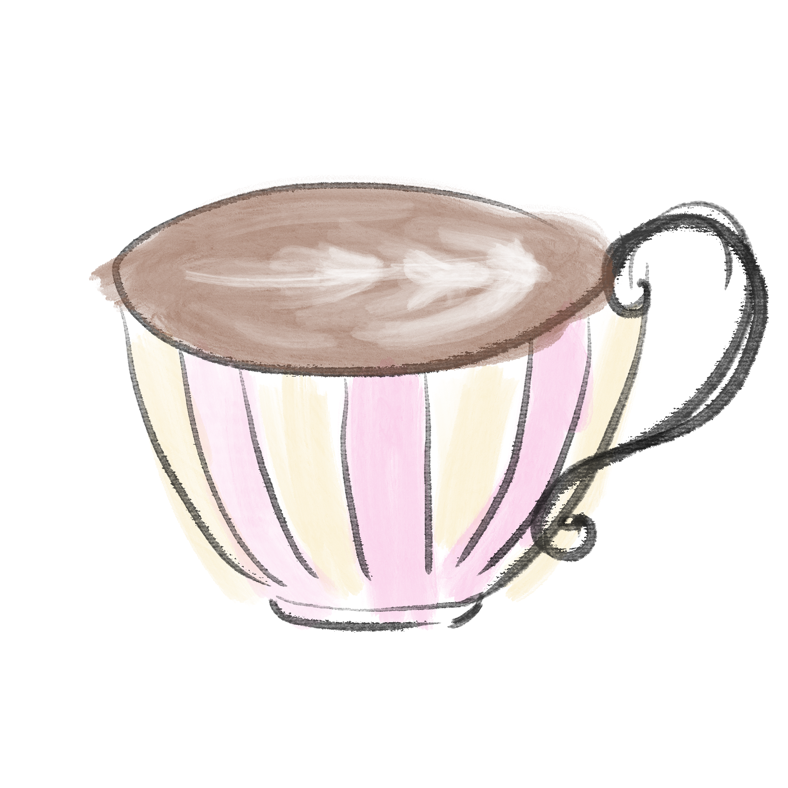

I used to think I needed to create something meaningful.
Something lasting. Something I could point to.
I wanted to be like Salvador Dalí.
Or write like Rabindranath Tagore.
But the most meaningful moments in my life…
never looked like that.
They looked like this
Sitting across from someone.
Letting the conversation wander.
Saying things we didn’t plan to say.
Sipping & Spilling
A friend once told me my strength wasn’t in what I create.
It was in how I understand.
And I realized: the best conversations don’t produce something.
They reveal something.
This is a small space for that kind of conversation.
Just you, a few questions…
and a cup of coffee.
What is a color that represents this coming age?
Why are you drawn to that color specifically?
What is one thing you’re finally over?
What’s something you’ve never gotten over?
If you could have a cafe, what would you name it?
What would be your signature dish?
Do you have that “one thing” in life
that you feel destined to do?
Who’s your roman empire in your life?
What makes you think about them?
Conversations like this are easy to forget.
But something in you is a little clearer now.
Don't you sometimes wish you could rewind on a conversation?
Now you can.
Request transcript